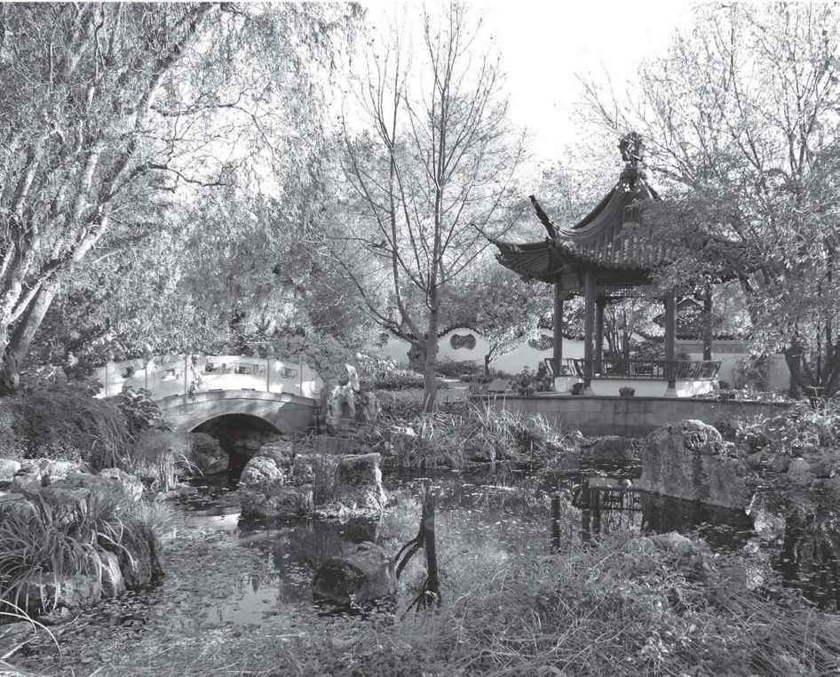
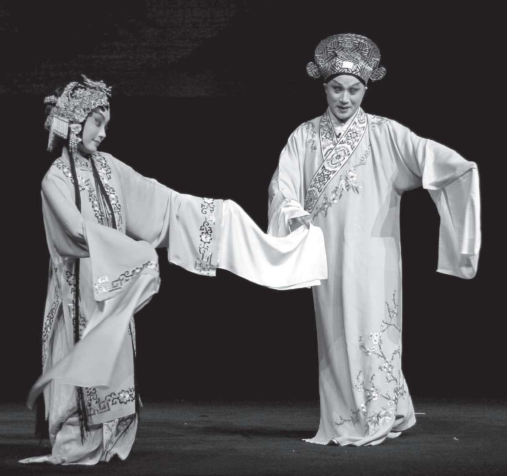

园林里的草寇
在中国最卓越的小说《红楼梦》（1792）里，主人公和他的女性朋友们住在与外界几乎完全隔绝的家庭园林-大观园里。在古代中国，园林象征着财富的快乐、感官的享受和长生的渴望，它们在远离尘嚣的地方以缩微的方式摹仿着一个秩序井然的宇宙。虽然在荣国府、宁国府的其他地方和府外的红尘里，道德的朽败已肆意蔓延，这个园林才是小说主题聚焦的地方，业力、因缘、世俗的义务与情感的牵挂，它们之间的深层冲突于此呈现。
发现绣春囊意味着淫秽力量对大观园的渗透，家族随后的恐慌表明，人们对道德秩序的脆弱普遍感到焦虑。社会日益恐惧物欲和淫欲的诱惑，《红楼梦》这类作品就是见证，它们打破了古典传统中深沉的哲学乐观主义。许多古典文学作品植根于儒家信仰中，认为宇宙是善的，和谐的伦理之道是可行的。然而早在11世纪，就已经有来自文学的证据显示，经历了皇皇大唐（618-907）的覆灭以及宋朝（960-1279）的物质文化与社会结构巨变之后，早先的信仰受到了剧烈冲击，已经矛盾重重。
到了宋朝，城市的崛起和货币经济的驱动促成了职业阶层的壮大。由于公元8世纪发明了印刷术，在不断扩张的市民阶级（由城市商人、工匠和其他专业人士构成）中，识字率和教育水平都迅速提升。娱乐业非常繁荣，虽然由于表演者社会地位低，相关的记录很少，但可以肯定的是，它对职业说书人、名妓和优伶的行会起到了支撑作用。这些技术和社会的变化导致了书面白话的兴起，由于它更接近日常口语，文人之外的阶层也能读懂。多数严肃作品仍然使用作为上流社会标记的文言文（一直到20世纪），但从13世纪开始，白话成了大众小说、戏剧和歌曲的主流语言。

图8 中国园林是“红尘”之外的隐身地，是复制了大宇宙秩序的小宇宙。这座花园里的岩石象征山，池塘代表海
这些作品表达了一种日益强烈的质疑之声：伦理行为和人类情感冲动真能和谐共存吗？虽然它们多数仍然出自文人之手，但许多作品已经反映了一个覆盖面更广、凝聚力更弱的读者群体的价值观。当人数日增的文人通过科举为有限的官职拼抢，许多失意者难以分得一杯羹，成为远离政坛的边缘人。到了明朝（1368-1644），随着经济的加速发展，和许多早期现代社会一样，政治圈、经济圈和文化圈日益分离，文人更加明显地成为一个单独的阶层。原来国家是作品的主要赞助人和发行者，从大约16世纪开始，民间书商成了大规模出版流行文学的重要角色。
白话作品虽然仍需进行伦理说教，但它们对人类愚蠢无知的尖锐刻画经常让读者怀疑，道德教化的力量是否真能控制住欲望泛滥的危险。和先前的许多诗歌和笔记体叙事作品不同，长达数十折的杂剧和时常超过一百回的长篇小说不再刻意抑制情感，而是将人物的情感冲动和行为置于宏大复杂的框架之中。由于这些作品越来越多地描绘了主流价值观之间的冲突，它们在探讨爱情、占有欲以及如何追求荣誉与幸福时就体现出一种新的多元主义倾向。
说唱文学：表演与讲述合一
戏剧和长篇小说都发源于一个漫长的讲故事的传统，而后者又植根于古代宫廷娱乐、皮影戏、相声以及各种形式的闹剧。因为书面资料过于偏重文人及其价值观，关于上述体裁的口头传播过程我们知之甚少。然而，能识文断字的读者当时仍是少数，流行文学、民间故事、幽默笑话主要是通过口头表演来传播。无论单独表演还是间或结成二人或三人组合，这些说唱者的收费都比剧团低，因而能吸引更多的底层观众。
在唐朝，佛教的影响日盛，从印度翻译的佛经和佛教故事带来了新的体裁，促进了中国白话文学的兴起。“变文”经常伴着图画和音乐来表演，以诗文相间的形式重述诸如佛陀弟子目连（梵文音译为摩诃目犍连）到阴曹地府拯救亡母脱离苦海的故事。
学者们将许多从这些作品演化而来的体裁统称为“说唱文学”。“弹词”经常由女性创作表演，题材多是朝廷纷争，比如主角女扮男装，考中状元，好在官场有所作为。说唱文学的其他体裁还包括“宝卷”（尼姑表演的佛教传说）、新出现的白话套曲、“诸宫调”和杂剧等。
“诸宫调”成型于宋朝的勾栏瓦肆之中，采用较短的散文说白来解释较长的歌唱韵文。规律出现的悬念段落可能标明了表演者的停顿之处，他可趁此机会向观众收钱，或者在持续数天的表演中吸引回头客。这种流行体裁的成熟形式可参考《西厢记诸宫调》 [1] 。这部长达八卷的作品脱胎于9世纪的《莺莺传》（见第三章），丰富了故事情节，将结局改成男女主人公私奔，颠倒了原作将伦常置于情感之上的立场。
这部诸宫调本身虽然不知名，却为最著名的北杂剧-13世纪晚期王实甫的《西厢记》-提供了灵感。王实甫的剧本因为尊重私人的情感关系甚于传统的伦理道德而广受喜爱，作品对情欲的宽容与理解堪称前无古人。虽然长达二十一折，剧作的结构却浑然一体，这得益于反复出现的月亮意象（五十多次）、天道循环的主题和恋人情感体验的主线。从一见倾心，到早期的憧憬，到中间的沮丧，再到最后的沉醉，张生与莺莺在唱词中赞美了自己的情感之旅，这部作品也借此表现了磨难成就深情的力量。
杂剧
到了元朝（1279-1368），描绘人类愚蠢与恶习的戏剧往往将诗歌、文言段落、口语对白与音乐、哑剧表演和舞蹈糅合在一起。事实上，直到20世纪初“话剧”的出现（部分原因是西方的影响），中国戏剧通常都是歌剧。许多戏曲的情节都来自传奇小说，内容多是忠臣与奸臣争斗、恶人遭到报应、才子佳人喜结良缘、和尚道士点化度人之类。
传统戏曲并不追求现实主义，而是通过一套象征的程式表达感情。这些剧作刻意拉开了剧中世界与现实生活的距离，揭示出人生经历的做作与虚幻。它们的符号和程式都是固定的，角色类型也几乎没有变化（演员有时会反串）：男女主角，忠心的仆人，各类年长的角色（例如迂腐的学究、拙劣的医生、骗子、贪官等等）。初次登场时，角色经常自报家门，解释故事背景或者回溯剧情，但总的来说，剧作更关注情感而不是情节。
遵循这些常规的戏曲在元朝空前繁荣。剧场、私宅、世俗节日、宗教庆典，随时随地都有剧团表演。在北“杂剧”（字面意思是“混合的戏剧”）中，正末或正旦要唱完四套曲子，与此同时，独白、对白和事件会推动情节往前发展。高潮通常出现在第三折，到了收场的第四折，和谐的秩序通常会恢复，但这些结局很少能解决作品的伦理质疑。
在马致远（约1250-1323）《黄粱梦》（改编自《枕中记》，见第三章）这类剧作中，普遍弥散着对官场的怀疑情绪。他在《汉宫秋》里讽刺唯利是图的宫廷画工毛延寿更是毫不留情。这部历史剧吸收了前代许多诗作和画作的元素，重述了王昭君的故事。汉元帝（前48-前33在位）爱上了这位宫廷美女，却为了“和亲抚夷”的现实政治需要牺牲了她。
作品开场便聚焦于卑鄙的毛延寿。他受皇帝委派在民间寻找美人，因为昭君出身农家，不肯向他行贿，他就故意在画像中丑化昭君，但仍推荐她入宫。汉元帝看到画像，对她毫无兴趣，十年后才偶然发现这位备受冷落的美人。元帝听昭君弹琵琶，感受到她丰富的内心世界，坠入了情网。毛延寿在欺君行为败露后，逃往匈奴，将真实反映昭君之美的画像献给了呼韩邪单于。单于向元帝索要昭君为妻，并以武力入侵相威胁。元帝接受了大臣的建议，忍痛割爱，命昭君与匈奴和亲。
在先前的传说版本里，昭君最终嫁给了单于，而在马致远的剧中，她却在汉帝国边境投水自尽。通过保存她的贞洁，作品反映了对胡汉通婚的强烈忧虑。将毛延寿的口水打油诗与正面人物的典雅诗歌并置，这部剧也突出了阶级身份的差异。然而，无论汉元帝有多少文采风流，最终仍只能反复责骂自己的无能。在剧的末折，他梦见一位番兵掳走了心爱的昭君，醒来不禁哀歌连连，这些曲子将他的绝望推到了顶峰。他将悲伤之情投射到盘旋不去的大雁（它本该南飞）身上，觉得它不停的叫声印证了自然节令的紊乱。（剧的全名《破幽梦孤雁汉宫秋》将季节的有序消逝作为背景，反衬元帝痛失爱侣的茫然。）他空有甲兵无数，却无猛将可用，身边尽是腐败无能的官员。元帝悲叹道：“不见他花朵儿精神，怎趁那草地里风光？”
其他一些元杂剧谴责了法律制度与伦理体系，认为它们比恶人更能置人于死地。关汉卿（约1225-1302）的《窦娥冤》讲述了一位被枉法处决的年轻寡妇的故事。剧作开头，即将赶考的穷书生窦天章为抵债将七岁的女儿窦娥给蔡婆婆做童养媳。
十三年后，二十岁的窦娥已是寡妇，曾救过蔡婆婆的张驴儿向她提亲，却遭拒绝。张驴儿本欲毒死蔡婆婆霸占窦娥，却弄巧成拙害死了自己的父亲，于是嫁祸窦娥，无辜的窦娥在官府屈打成招。被处决前，她坚信上天会为自己申冤，预言三种超自然的现象将证明自己的清白。她的预言全部应验：血溅白练（不沾地）、六月飞雪、楚州大旱三年。这些事件，尤其是著名的“六月飞雪”，以诗意的方式表达了正义，虽然最终的正义要等到窦天章归来，以朝廷高官的身份惩罚真凶，为女儿平反昭雪。对于看重家族声誉甚于个体生命的观众来说，这样的结局或许可以补偿窦娥的牺牲。然而这部作品也表现了恶行与不公所造成的悲惨后果。
传奇
明朝宫廷对戏曲的扶持使得传奇剧的篇幅更长，音乐表演更趋繁复。这些南方的传奇戏比北方的杂剧更自由，包含十到二百四十出（通常三十至五十出）内容，所有角色都可演唱。它们往往是有说教意味的情节剧，题材大都是儿女孝行、情侣离别、乔装改扮、破镜重圆之类。在传奇里，第一出往往是剧情概述，爱情和战争的情节、插科打诨的场景以及皆大欢喜的结局似乎都是不可或缺的元素。
明朝贵族戏的代表作是汤显祖（1550-1616）的《牡丹亭》（1598）。开篇的场景突出了爱情唤醒生命的力量，杜丽娘的思春之情（受了《诗经》的激发）让她分外可爱，与闺塾先生的沉闷生活形成了鲜明对照，这位麻木的老学究对爱情和自然都极其漠然。丽娘在花园亭子里梦见与一位年轻书生（柳梦梅）幽会后，相思成疾而死，但她的游魂继续通过梦境追求自己的爱情。
柳梦梅在爱上丽娘的画像后，遇见了她的鬼魂：
梦梅根据丽娘的嘱咐掘墓开棺，丽娘起死回生，梦梅却因盗墓被她父亲囚禁。然而，和同时代莎士比亚笔下的罗密欧与朱丽叶不同，《牡丹亭》赋予了爱情超越生死和道德陈规的伟大力量。这部极具抒情色彩的传奇戏将情侣僭越礼法的行为置于梦幻之中，巧妙地挑战了伦理传统，提升了性爱的地位，当这对情侣的血肉之躯结合到一起时，性爱的救赎力量更完全地展示出来。
在孔尚任（1648-1718）的《桃花扇》（1699）这部极其文雅的传奇戏里，阻碍爱情的力量变得难以逾越。 [3] 这个爱情故事是以加速南明王朝灭亡的历史斗争为背景的，当时叛军 [4] 占领了北方，崇祯皇帝自杀，部分皇族逃到南京，阴云密布的情节就在这里展开。为了抵制朝廷的贪腐集团，年轻的主人公侯方域与其他忠贞之士重建了复社，希望以纯正的儒家理想实现明朝的中兴。
标题中的桃花扇是侯方域和名妓李香君的定情之物，是在婚宴上赠给她的诗扇。得知妆奁和酒席皆是阮大铖（宫廷戏曲作家出身，工于心计的奸臣）出资，穷困的方域受到杨龙友花言巧语的迷惑，仍愿意接受馈赠，但香君义正词严地退回了这笔不义之财。后来方域遭到阮大铖的报复陷害，被迫逃往戍边的史可法军中避祸，阮大铖等人强迫香君嫁与漕抚田仰为妾。

图9 16世纪《牡丹亭》中“游园惊梦”这一出戏在中国和世界长演不衰，这个版本是奥地利的“未来艺术实验室”在2007年上海电子艺术节上推出的
众恶人企图强行劫走她之时，香君以头撞地，血染诗扇。她让人把血迹画作桃花，将扇捎给方域，这暗示文化终能战胜暴虐。虽然两人在祭奠崇祯皇帝的仪式上重聚，再续前缘的梦想却被主持仪式的道士张瑶星砸碎了。张斥责他们在国破家亡之际只关心花月情根。为了不背叛明朝，方域和香君决定分道扬镳，各自归隐求道：
话本：底本？
在宋朝，由于说书的兴盛，用白话创作的话本发展起来。这些故事经常都在传奇小说的基础上扩展而成，目标读者更加广泛。作品中的人物不仅有传统的才子、佳人、贪官，还包括了狡诈的商人、忠诚的仆人、智慧的和尚。鬼魂也时常出现，但这些超自然的元素主要是为了满足现世报的功能。
得益于说书文化的流行，这些更具艺术自觉的叙事作品从13世纪末开始兴起。到了16世纪末，话本小说已经频繁借用说书人的陈规与套话（例如“话分两头”表明场景即将转换）。和说书人相仿，叙述者经常用对联、诗词和道德说教打断故事的进程。但和文言传奇小说用诗词来表现人物的做法不同，话本中的诗词通常发挥了说书人开场白的功能（以让中间加入的听众也能了解完整的情节）。长期以来，学界都认为“话本”是这些早期说书人的稿子，所以将其译作“底本”（promptbook）；然而说书人的大纲已有另外一个名字（“底子”），所以“话本”更有可能是作家刻意发明的新体裁，用来吸引日益扩大的阅读群体。
这些故事反映了新崛起的市民阶层的理想，无论是立志进取的平民、品行纯洁的名妓，还是其他真诚追求幸福的人，在作品中都有改变自身地位的机会。在一些出人意料的处境中，女性也获得了主宰命运的可能。例如《快嘴李翠莲记》的女主人公告诉公婆，如果不喜欢她的快嘴，就只能休了她，最后她出家做了尼姑。在《花灯轿莲女成佛记》里 [5] ，一直没有孩子的张元善夫妇收留了一位失明的婆婆，婆婆去世后，妻子王氏便怀上了一个女儿。出生后，这个女孩与她的前身有许多相似之处，笃信佛法，丝毫不牵念尘世。最后，她在迎亲的花轿中坐化而死，避免了婚姻的羁绊。
这类故事总是包含了令人惊讶的内容，两部最著名的话本集的标题也体现了这一点，一部是冯梦龙（1574-1646）编的《醒世恒言》（1627，他的三部话本集之一），另一部是凌濛初（1580-1644）的两卷本《拍案惊奇》（1628和1632）。和许多文言故事一样，这些白话小说通常也强调了善恶到头终有报的观念，但它们也同情人性的弱点，理解人们在应对困境时做出的妥协。
在《醒世恒言》的《卖油郎独占花魁》中，也有一位自主决定命运的女性。小说开篇追述了京城花魁美娘先前的悲惨经历，然后进入故事的主要部分。吃苦耐劳的秦重沿街卖灯油，第一次瞥见了有倾城之色的美娘。为了能一亲芳泽，他一年多省吃俭用。约定共榻的晚上，美娘回来迟了，而且饮酒过度，很快就困倦入睡，但秦重依然心满意足。美娘半夜呕吐，他用自己的袖子接住，给她递茶漱口，一夜拥着她，没有亵渎的举动。清晨醒来，美娘记起他的好心之举，意识到他的一片痴心：“难得这好人，又忠厚，又老实，又且知情识趣，隐恶扬善，千百中难遇此一人。可惜是市井之辈，若是衣冠子弟，情愿委身事之。”此后，秦重又多次帮她，美娘被他的至诚打动，决心改变自己的生活。虽然她幼年逃难时被人卖入上等青楼，做惯了王孙贵胄的玩物，她也留了心眼，暗中积攒了一小笔钱。赎身之后，她与地位卑微的卖油郎结为夫妻，资助他开办油铺。靠着美娘的这些积蓄，这对平民夫妇勤俭持家，生意日渐兴隆，孩子获得功名，还不忘周济邻里。
章回小说
和话本小说一样，明代兴起的长篇“章回小说”也受到说书传统的很大影响。（“回”很可能指说书表演的一个时间单元。）如果说篇幅较短的话本倾向于突出情节和人物，章回小说则经常以抒情的笔调表达了对世界的整体洞察。例如，许多长篇作品都体现了理学家的理想，那就是天理统治着一个有序的伦理宇宙，这样的信念有利于中国在元朝统治结束后恢复汉族文化的特征。
与此同时，这些小说也以现实主义的态度描绘了多样化的人性，读者禁不住会怀疑，在一个被贪婪与淫欲败坏的世界里，各种彼此冲突的价值观是否能达成妥协。许多此类作品都既沉醉于佛教徒所称的“尘世”里，又试图超越它。它们尖锐真实地刻画了叛贼、草寇和道德秩序的其他反抗者，有些读者在其中发现了英雄，另外的读者则看见了控制颠覆性思想和女性等边缘群体的企图。
学者们有时把传统小说比作中国的园林和山水画，二者都邀请我们流连其中，而不是从一个固定的角度去观赏。它们经常有一百多回，片段化的情节一般都以季节、地理或神话的模式作为结构框架。章回末尾通常都是“欲知后事如何，且听下回分解”，但这种衔接并不保证全书有统一的宏观结构。许多长篇小说借鉴了戏剧的常规，情节在三分之二处到达高潮，然后缓慢进入结局部分，让人感觉生命仍将如此延续。
明代四大名著
《三国演义》取材于历史，描绘了汉朝的覆灭和三国的兴起（3世纪早期）。（“演义”字面意思是“详细阐发意义”。）小说手稿诞生于14世纪，1522年刻印，后又历经数代作家兼编者的修改，最通行的版本是带评点的毛宗岗（1632-1709）本（1679）。《三国演义》曾被多次精心改编成影视作品，包括中国中央电视台1994年推出的轰动一时的八十四集电视连续剧。这是中国迄今为止最昂贵的一部电视剧，参与演出的人员达四十万，吸引了全世界十二亿的观众。
这部小说叙述部分用的是浅近文言，对话部分更接近口语，一百二十回的篇幅赋予了它史诗的规模和气魄。它将众多脍炙人口的历史故事融汇成一部长篇传奇，强化了历史遵循特定宏观模式的观念。小说的情节暗示，在历史的伦理秩序的演进中，个人发挥的作用是有限的，毛宗岗在序言中阐述了这种见解：“话说天下大势，分久必合，合久必分。”
虽然描绘的是历史事件，《三国演义》也极富感染力地呈现了人物的个人奋斗，正因如此，小说中的许多形象成了人们谈论阴谋、恶行和权斗时经常引用的典型。魏王曹操被塑造成一位阴险残忍的诗人君主，蜀汉皇帝刘备和他的两位结义兄弟-勇敢却自负的关羽和跋扈而暴躁的张飞-则是正面角色。三人统一天下的梦想屡屡碰壁，直到刘备请道家智者诸葛亮出山才有起色。 [6] 在关键性的赤壁之战中，诸葛亮召来了火攻所需的东南风，曹军溃逃，此次胜利奠定了三足鼎立的局面。
虽然小说将刘备视为恢复汉室的正统人选，他却过于看重个人义气，时常做出固执的决定。因为诸葛亮必须服从刘备的选择，他的谋略有时也难以施展。尽管他的忠诚堪为儒家教科书的典范，他却无力阻止刘备为两位小弟复仇。刘备盲目攻吴，惨遭失败，含恨病死，蜀国也到了覆灭的边缘，诸葛亮虽然有所不甘，还是尽心竭力辅佐懦弱的后主。
小说对道德报应的强调或许能让读者更愿意相信历史的轮回，但最终的结果并非如此明确。作品是想暗示，虽然要历经数百年的沧桑，分合的循环终能把贤德的君主推上宝座？还是通过记述历史的轮回来嘲讽王朝治乱的理想，如小说中那句著名的话所说，“谋事在人，成事在天”？
另一部明朝名著《水浒传》（约1550）描绘了12世纪初一群大碗喝酒、胆大妄为的草寇。一百〇八位好汉中，三十六位是重点刻画的主要人物，他们来自社会的各个角落，因为不同的原因被逼上梁山，有的是对官府的腐败不满，有的是为了报仇，有的是被其他草寇胁迫，或者像大方却冷酷的首领宋江那样，是因为妻子的背叛。小说的打斗、结拜、吃喝场景都极具现实感，故事的高潮是为庆祝好汉人数达到天定的一百〇八人（包括三个女人）而举行的盛大酒席。这些忠诚的草寇打着替天行道的旗帜，抢劫富豪，击败官军，争取招安，然后又为朝廷征讨叛军。然而，他们对无辜的孩子和女人没有任何怜悯心，书中血淋淋的屠杀、剥皮和吃人肉的描写让一些学者忍不住谴责这些好汉的暴虐。支配他们的是一种帮会意识，依靠一套严苛的规则来维系，其基础是复仇心和对女性的憎恶。他们深信女人既软弱又淫邪，所以把禁绝性欲视为阳刚的标志，把残杀出轨的女人视为兄弟义气的证明。
和《三国演义》相比，《水浒传》的口语化更彻底，大量使用了成语和民歌，能让更多的读者理解，因而点评者更觉有必要控制这部小说的社会影响。它是一曲农民起义的颂歌，还是一则揭露帮会意识的恐怖后果的寓言，读者对此争论不休。（由于它经过多位作者和编者的修改，或许本来就没有一以贯之的意识形态。）即使读者崇拜小说里那些叛逆的冒险者，当他们看到没有儒家伦理加以约束的复仇欲望造成了怎样的毁灭与混乱时，也很难不心生怵惕。
这类小说都是在缓慢的累积中演化而成的，和重写前代诗歌的做法相仿，文人们经常为了某些意识形态的目的改写更早的版本。在提高劝服力和扩大销量的双重欲望驱动下，重要的小说付印时，往往会在前面加上导读，在正文中间、书页边缘和每回末尾插入宣扬儒家观念的点评。（必要时他们会声称，如果读者发现点评和正文有冲突，那是他们自己阅读不够仔细。）点评者和编者也会讨论佛家和道家的主题，例如自然的变化之道和伦理行为的因果报应，他们也会评价作品在结构、风格和节奏等方面的优缺点。
这些点评将小说也视为值得阐释的严肃文学，极大地拓展了文学理论的范围，因为此前几乎只有诗歌才有这样的待遇。一些编者还对经手的材料作了实质性的改动，例如金圣叹（1608-1661）就将《水浒传》从一百二十回删成了七十回（1641）。不同的点评本有时会造成严重的争议，《三国演义》就是如此。 [7] 有人认为它描绘忠勇行为是在宣扬明朝最为看重的价值观，有人却觉得，这些人物的自负造成了灾难，因而作品是在隐晦地批评明朝的帝国宣传。
《西游记》（1592）或许是最脍炙人口的东亚文学经典。小说对历史上高僧玄奘（596-664）犯险远赴印度的故事加以艺术的虚构，来讽刺当时社会的痼疾。这部长达百回的作品（作者可能是吴承恩，约1500-1582）脱胎于《大唐西域记》以及以玄奘为题材的各种传记、变文、戏剧，但它比此前的长篇小说更具结构上的统一性。小说里的玄奘还在襁褓之中时，寡母就惨遭恶匪抢夺奸污。在取经路上，他总是惊慌失措，忧心如焚，但最终他还是到达西天，取回了三藏佛经（“三藏”也是他的法号），并把它们译成中文。
这部记行小说 [8] 为信念坚定而性格怯懦的唐僧配备了四位有超自然法力的同伴：机智而冲动的孙悟空、贪吃好色的猪八戒、沙僧和白龙马。最重要的角色是美猴王孙悟空，作品就是以他的早期经历开场的。他足智多谋，但就像人心一样狂野躁动，直到被佛法管束住。他极受读者欢迎，在无数漫画、电影、电视剧和电子游戏里都有他的身影。靠着一根金箍棒，孙悟空经常是同伴的救星，但若没有玄奘的紧箍咒，他那肆无忌惮的神通就会让大家都身陷险境。
如果把《西游记》当作一部象征性的小说，那么玄奘就是求道者，悟空是他的心智，白龙马是他的意志，八戒是他的生理欲望，沙僧是他与大地的联系。取经之路代表心智的修行，作品中的危难与妖怪代表遮蔽顿悟之光的种种扭曲的幻象。小说对精神追求的描绘在多大程度上表达了反讽，学者们各执一词。它是严肃的史诗还是史诗的戏仿？它是鼓吹用佛法度人，还是主张儒释道三教合一？
许多续篇和后行篇进一步扩大了这部小说的名气和影响力。 [9] 和它的母小说一样，《西游补》 [10] （1641）既是辛辣的社会讽刺作品，也是高明的佛教寓言，表现了“情”对心的种种禁锢。孙悟空被鲭鱼精（“鲭”和“情”谐音）所迷，困在一系列幻境中，但他却借此开了心窍，洞察到欲望的本质：它如何蒙骗人，自己又如何受制于它。当他悟到这一点时，作品便从聚焦于他的第三人称叙事切换为全知式叙事，视角的变化仅是本书刻意采用的文学技巧之一。按照当时的标准，这部十六回的小说不算长，但其内容却为精神分析派的解读提供了宝藏，里面有时空穿梭的“万镜楼台”，一大群凿天的“踏空儿”，以及其他许多超现实的景象，简直是焦虑征候的“梦文本” [11] 。
另一部续篇《后西游记》 [12] （1715）讲述了唐半偈、孙小圣、猪一戒、沙弥师徒重回西天求取佛经真解的故事。其中一处险关叫解脱山，山上有七十二堑，堑名最终都与七情六欲有关，猪一戒因为受不住众妖奉承而被擒，多亏孙小圣使用分身术才被救出。 [13]
明代四大名著的最后一部《金瓶梅》（1618）因为性描写而闻名，它生动地呈现了一个沉溺于金钱、地位和肉欲的社会。这是最早的风尚小说之一，关注社会背景、社会角色和社会期望，揭示了阶级习俗和阶级教养如何决定了个人的情感和行为。在一百回的故事里，为了赢得西门庆（一位不择手段的药商和权力贩子）的欢心，六位妻妾争风吃醋。《金瓶梅》的背景、西门庆和小妾潘金莲等角色都取自《水浒》的一段故事，但戏仿手法却让作品摆脱了《水浒》《三国演义》和《西游记》的神话框架。在这本书里，驱动情节的是欲望本身。虽然虚拟的场景是12世纪，它所描绘的家庭纠葛却纤毫毕现地反映了16世纪中国社会的面貌。
《金瓶梅》没有让草寇武松为报杀兄之仇而处死淫乱的嫂子和她的情夫，而是给了西门庆自己毁灭自己的机会。（传说署名作者兰陵笑笑生其实是观念正统的王世贞，他因为父亲死于首辅严嵩之手，为了报仇，专门写了此本淫书，随后在书中沾毒，送给严嵩放荡的儿子严世蕃，结果严世蕃看书时中毒而死。 [14] ）西门庆与邻居李瓶儿（标题中的“瓶”）偷情，她丈夫被活活气死，西门庆将两家的财产合并，建了一座豪华的府邸来炫耀自己的财富和地位。虽然他胸无点墨，却在“书房”里摆满了文人的玩好。然而，不加甄别地陈列一大堆字画暴露了他的低俗品位，发生在书房里的政治算计和淫乱行为也表明，他不过是个市侩小人。在瓶儿成为西门庆的新宠后，心生怨恨的金莲在翡翠轩偷窥他俩交合，得知瓶儿已经怀孕。西门庆被惹恼，在葡萄架下用金莲的脚带把她绑起来，然后灌她一通酒，变着方儿逗弄她，最后受尽折磨的金莲趿着一只拖鞋逃回了房。 [15]
虽然此书并不像李渔（1611-1680）滑稽的色情小说《肉蒲团》（1657）那样，通篇都是露骨的性描写，但它里面许多细致入微的性虐场景还是探究了肉欲败坏人心的力量、欲望不可满足的本性和权力交易带来的痛苦。妒忌的金莲害死了瓶儿的儿子，瓶儿伤心而死，金莲又用印度僧人的春药引诱西门庆纵欲贪欢，最终让他死于非命。“不可多用，戒之！戒之！”僧人曾告诫西门庆，但这反而刺激了他的淫心。他夭亡之后，那些利用他往上爬的食客除了在祭文中称赞恩主一番，便不再管他了。他的正妻在他咽气的同一刻诞下了一个儿子，结果儿子后来也出家了。
在许多评论者看来，这些报应始终传递着佛教和儒家的价值观。而在另外一些人眼里，小说中各种异质元素（先前的歌诗、佛教故事、戏剧、小说）的并置使得道德批评多了反讽的味道。用儒家《大学》的模式来分析，西门庆个人的道德缺陷不仅造成了家庭的失序，而且也应为社会的衰落和王朝的政治崩溃承担责任。评论者经常把这样一个前后统一的设计归于单个作者，尽管我们无法排除多位作者的可能。作者似乎与小说人物老套的世界观保持着反讽的距离，所以作品有可能是在抗议而不是维护儒家规范。
虽然现代的许多左派学者声称，此类白话作品代表了群众的立场，但多数小说杰作都出自文人之手。从17世纪开始，小说家们倾向于改写、戏仿和颠覆先前的作品，这似乎成了一种文学游戏。
考虑到原作者的经典地位，我们似乎难以断定，这些作品最终的目的究竟是为主流的政治社会状况辩护，还是在批判它们。
18世纪讽刺小说
对地位的痴迷也是吴敬梓（1701-1754）《儒林外史》（1750）的核心主题。这部小说质疑了道德理想的效力，尤其是被人僵化固守的那些理想，它戏仿了正史的传记，奚落了大约七十位文人最琐屑无聊的偏执想法。虽然开篇的诗谴责了“功名富贵”的虚妄，书中的多数人物却汲汲于通过传统渠道获得富贵，即使放弃科举与官场，他们的动机也同样可疑。
为了掩饰他们的不安全感，即使那些放弃科举的角色也极力寻求个人价值的认可，作品辛辣的讽刺表达了一种文化危机意识。和先前的小说不同，《儒林外史》没有在人物初次登场的时候贴标签，而是通过其行为揭示性格。这些人物积攒文化资本的手段五花八门：科举考试，与进士、举人交结，与权贵联姻，发表应试范文，甚至冒名顶替。带有吴敬梓个人烙印的主角杜少卿慷慨好施，几乎散尽了家财。他不过是当时反体制的一位怪人，通过赞助各种耗费巨大的活动来换取地位，无论是梨园选美的盛会，还是泰伯祠的祭礼，出资的都有他。评论者普遍将这场祭礼视为小说的高潮，但它除了留下怀旧的感伤外，并无多少用途。参加祭礼的每个人后来都未能重建道德秩序，泰伯祠逐渐沦为废墟，当年的仪注单也湮没尘土下，不可辨识了。杜少卿徒劳无功的仪式让我们想起《桃花扇》结尾的祭奠会，或许也曲折隐晦地表达了对异族统治的抗议。
在一些读者看来，这部“文人小说”仍可宽慰人心，因为书中有一批正直的人物潜心学习经书、艺术、仪礼，致力于道德修养。如果这样解读，那么作品第一回对画家王冕（唯一取自历史的角色）的理想化描写和最后一回对四位底层文人的记述就至关重要了。 [16] 王冕看见百十颗小星坠落时，认为这是上天垂怜，降下这些星君来“维持文运”；与此呼应，这四位分别擅长琴棋书画的书生丝毫没受功名思想的沾染，与其他角色唯利是图的功利主义形成了鲜明对比。然而，小说对各种虚伪行为的揭露固然可以理解为弘扬高贵的文人传统，却同样可以看成一种批判，尤其当我们考虑到它史无前例的逼真程度。（这部作品虽有许多离题的长段落，但较少依赖文言套话和既有的材料，因而其白话风格更有连贯性。）
《红楼梦》
《红楼梦》（1792）迄今已经售出一亿多本，是世界历史上第五畅销的长篇小说（也位居包括《圣经》和《古兰经》在内的图书畅销榜前十五名）。它又名《石头记》（最优雅的英文译本就采用了TheStory of the Stone的书名 [17] ），开篇讲述了这个故事颇具神话色彩的起源。一块女娲补天剩下的奇石化身为玉，进入了富庶的贾家。衔玉而生的宝玉生来就有一种不可抑制的爱与被爱的欲求，他与表妹黛玉之间注定有一段因缘。她欠着他一笔超时空的债，因为前世他是神瑛侍者，而她是一株绛珠草，神瑛侍者曾以甘露灌溉，使她获得了灵性。为了报答他的恩情，这位绛珠仙子决心用一生的眼泪来补偿他的甘露。 [18]
在作品最生动的一个场景中，宝玉发现黛玉正将落花埋起来，以免它们被人践踏。“那畸角上我有一个花冢，如今把他扫了，装在这绢袋里，拿土埋上，日久不过随土化了，岂不干净。”宝玉放下书来帮忙，黛玉要看他读的是何书，结果发现是《西厢记》，后来黛玉还记起了书中怀春的莺莺的悲叹：
花落水流红，
闲愁万种。 [19]
既然她的前世是花，那么在神话的层面上，敏感的黛玉也是在埋葬自己。她时刻都在担心宝玉会娶别人，忧心成疾，她的脆弱也部分地促成了她最害怕的结果。贾家让宝玉和宝钗定亲，黛玉伤心而死，回头再看葬花的场景，就更觉凄惨。这些花象征着被人冷落的美，也连接着黛玉和莺莺-她和宝玉共读的《西厢记》的主角。
宝玉渴望摆脱一切人生之苦，却又分外依恋环绕身边的诸位女子，这种冲突在一些人看来是这部小说的核心主题。虽然宝玉最终出家，道教和佛教的解脱理想似乎占了上风，但作品里的许多声音却在为情感牵挂辩护，认为它是仁的本质。小说中嵌入的许多诗词、戏剧和谜语也与超脱出世的思想唱反调。文学作品固然可以揭示红尘世界的虚空，它们却同样可以证明，艺术创造具有影响业力果报的潜力。
在终极意义上，《红楼梦》暗示，人世流行的各种爱的观念都是有缺陷的。这对年轻情侣和他们的家庭面对的都是悲剧性的幻灭，它不仅让我们看到包办婚姻的害处，也指向爱情本身如梦的本质。梦未醒的时候爱情是如此真实，又是如此重要以至于角色渴望将它无限延长，但最终它不过是过眼云烟。
沿着这样的思路看，作品的许多形式元素都强化了关于真实与虚幻的探讨。小说开篇不久，就有一组诗预示了宝玉身边众女子的命运，在最后四十回，它们一一应验。 [20] 正如这些诗和图暗示了宝玉脱离凡尘的结局和贾家即将遭受的灾难，作品里的文字游戏、成对的象征符号和其他起结构作用的细节进一步暗示，宇宙的秩序是人无法参透、无法控制的。（“贾”姓与“假”同音，与之对称的是与“真”同音的“甄”姓。）被小说的多重主题、双重手法和纹心结构所包围，故事中的许多镜子呼唤着清晰反映现实的梦想和镜像式知识的力量。
《红楼梦》也进一步戳穿了小说与点评之间的脆弱边界。曹雪芹（1715-1763）这位没落世家的公子撰写了前八十回，他死后一位编者完成了我们今天所见的一百二十回版本。由于在小说印行之前，已经有各种不同的点评版流传，到底哪些修改反映了曹雪芹的意图，人们争论不休，这也导致文本中有许多前后不一致的地方。
这些争论催生了一门称为“红学”的产业，众多个人投身其中，考证作者、版本和隐含的意义。一些学者认为，这部小说抨击了封建社会的腐朽。在他们看来，贾府注定的衰败符合中国的王朝循环论，强盛者走向没落是由于道德崩塌，天命收回。这样的历史解读为作品中据称带有自传色彩的元素增添了宏观寓意。小说聚焦的不仅是个人的失落，还包括整个贵族文化传统的命运。
作品既描绘了上层特权所滋生的愚蠢与腐败，它也是世界上关于文学文化之美的最动人的见证之一。《红楼梦》的无数读者从中体悟了爱与憧憬，进入了主人公的内心，当他们面对自己的失恋之苦时，也能在书里寻得慰藉。小说启发了三十多部续篇，包括满族诗人顾太清（1799-1876）的《红楼梦影》，这部遗作很可能出版于1877年，也许是中国现存最早的由女性创作的长篇小说。
如果你想知道19世纪和20世纪的战争与动乱如何改变了人们对理想的认识，请听下回分解！